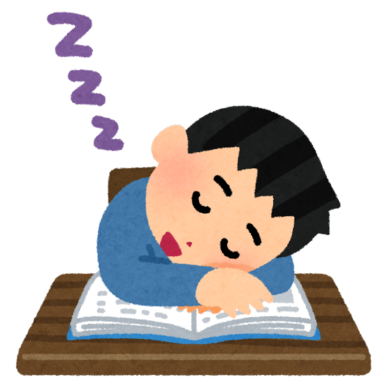

目を覚ます方法

一夜漬け中に眠気を覚ます方法をいくつか紹介したいと思います。
カフェインを含む飲料には覚醒作用がありますが、含有量は製品によって異なります。また、摂取する時刻や体質によっては、その後の睡眠に影響することがあります。
過剰に摂取すると、めまい、動悸、不安、不眠、吐き気などの健康被害につながる可能性があります。複数の飲料を組み合わせず、製品表示と公的機関の注意事項を確認することが重要です。
2つ目は、発声することです。歌を歌いながら計算を解いたり、声に出しながら暗記をすることで、目を覚ましながら勉強効率を上げることができます。
最後に、立って勉強をするということです。ずっと座って勉強ばかりしていたら必ずと言っていいほど強い睡魔に襲われてしまいます。なので、眠くなってきたと感じた時には立って勉強するようにしましょう。